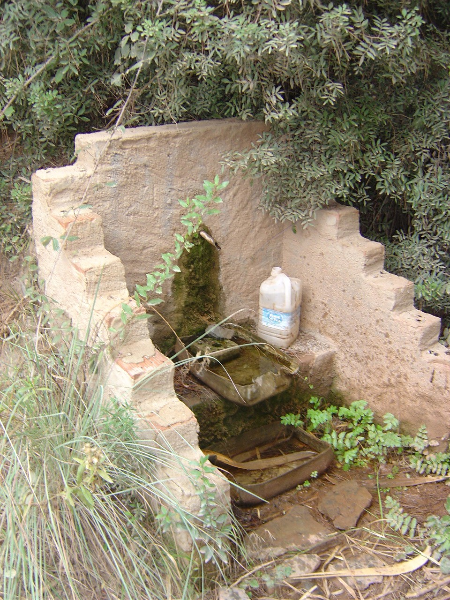
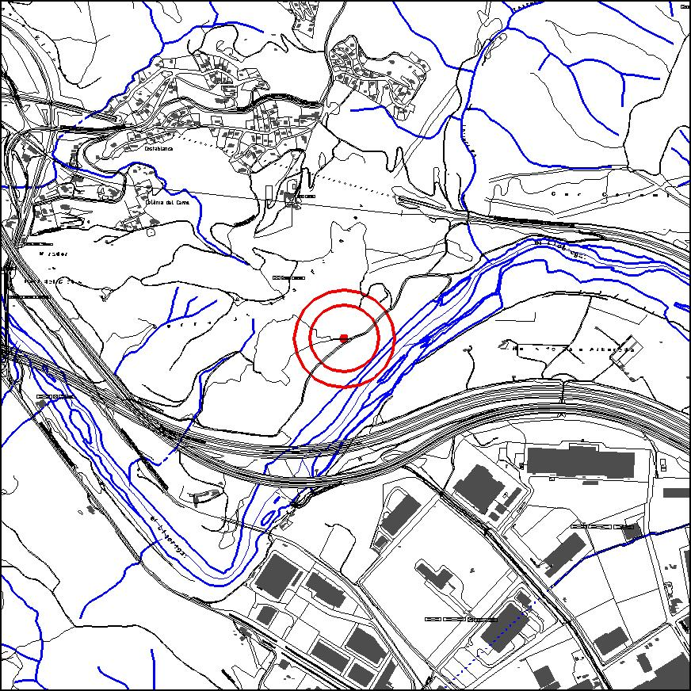

|  |  |
Nom de l’element: Font del Tudó
Clau d’identificació: C.01
Nucli o indret:
UTM: X= 412.174, Y= 4.593.457
Règim del sòl: sòl no urbanitzable
1.1 Característiques:
És una de les poques fonts d’aigua que hi ha actualment al terme municipal, amb sortidor i un raig d’aigua continuat. L’entorn on es troba es troba altament degradat degut al pas d’infraestructures viàries.
1.2. Estat de conservació:
Regular
1.3. Ús actual:
Ecològic i històrico-cultural.
1.4. Accés:
Accés a través de la pista forestal que circula per la base del Turó de les Forques.
És una de les poques fonts d’aigua supervivents del terme municipal.
3.1. Usos admesos:
Espais lliures, serveis tècnics.
3.2. Condicions d’ordenació:
Segons Pla Especial a redactar.
3.3. Accés i serveis:
Accés a través de la pista forestal que circula per la base del Turó de les Forques.
BPU (Bé Protegit Urbanísticament)